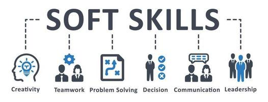
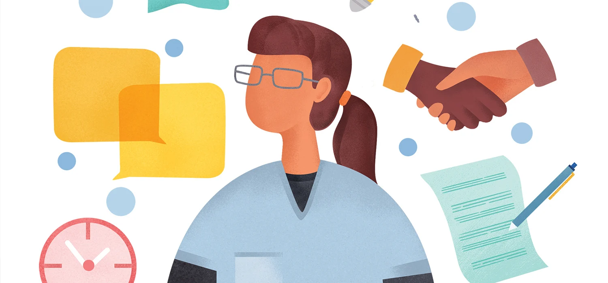

Why Soft Skills Matter
In today’s competitive world, soft skills are as essential as technical knowledge. Whether it's effective communication, time management, or leadership, these skills set you apart and help you excel in your career and personal life. Soft skills are the foundation of emotional intelligence, enabling you to navigate challenges, inspire others, and foster productive relationships in any setting. Strong soft skills can boost your confidence, help you connect with diverse teams, and open doors to opportunities you never thought possible. They enable you to lead with empathy, adapt to changing environments, and make a meaningful impact both professionally and personally. At Soft Skills Academy, we provide tailored courses to enhance your interpersonal and professional abilities. Our expert-led programs focus on practical, real-world applications to ensure you not only learn but thrive in today’s fast-paced world. Whether you're looking to grow as a leader, improve your communication, or master teamwork, we’re here to guide you every step of the way. Let us help you build a future filled with success and growth!
Why Choose Us?
Expert instructors with real-world experience
Interactive and practical training modules
Flexible learning schedules
100% free courses and resources
What to Expect
At Soft Skills Academy, you can expect a hands-on learning experience that focuses on real-world skills. Our courses are designed to provide you with practical tools and strategies you can use right away, whether you’re looking to boost your communication, teamwork, or leadership abilities. You’ll receive expert guidance from instructors with years of experience, and our courses are structured to allow you to progress at your own pace. Each lesson is built to be engaging and impactful, offering you the chance to immediately apply what you’ve learned to make positive changes in your personal and professional life. Get ready to unlock new opportunities and grow with us!
